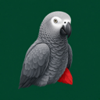
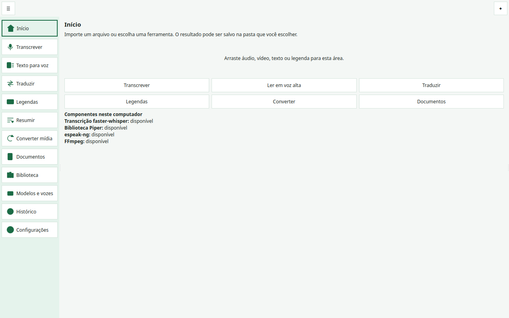

Computador (Linux)
Transcreve áudio e vídeo com faster-whisper, lê texto em voz alta com Piper ou espeak-ng, traduz fala para inglês, edita legendas, resume textos sem IA e converte mídia com FFmpeg. Também em Flatpak.

Transcrição de áudio e leitura em voz alta no seu próprio computador. Quatro programas gratuitos e independentes, nomeados a partir do papagaio-cinzento (Psittacus erithacus).
Transcreve áudio e vídeo com faster-whisper, lê texto em voz alta com Piper ou espeak-ng, traduz fala para inglês, edita legendas, resume textos sem IA e converte mídia com FFmpeg. Também em Flatpak.
Grava pelo microfone, lê textos com uma voz instalada que não usa a rede e guarda os arquivos onde você escolher.
Transcreve chamadas ao vivo com o nome de cada pessoa, resume reuniões, toca música e sons e ajuda em mesas de RPG com dados, fichas, iniciativa e regras.
Lê as transcrições exportadas do Teams, Google Meet, Zoom, Webex ou Jitsi e anota quem falou o quê, com decisões, tarefas e perguntas.
No programa de computador, o áudio e o texto ficam no seu computador. A rede só é usada quando você confirma o download de um modelo de transcrição ou de uma voz. No celular, a leitura usa uma voz instalada que não usa a rede. Cada programa tem pasta, ambiente e dados próprios.

No Linux, dentro da pasta do repositório, um comando pergunta qual programa instalar:
git clone https://github.com/thaynabds/CongoGreyParrot.git
cd CongoGreyParrot
./instalar.shO programa de computador também vem como pacote Flatpak na página de versões. O passo a passo completo está no README do projeto.
Temas claro e escuro, com perfis de alto contraste, Kuro, PinkVoid, RedVoid, YellowVoid, GreenVoid e BlueVoid.
Filtros para protanopia, deuteranopia, tritanopia e monocromia, tamanho da letra ajustável e leitura em voz alta.